<title>Voz en Mueve y Estira</title>
<meta name="claude:viewport-fit-sides" content="cover">
<link rel="preconnect" href="https://fonts.googleapis.com">
<link rel="preconnect" href="https://fonts.gstatic.com" crossorigin>
<link rel="stylesheet" href="https://fonts.googleapis.com/css2?family=EB+Garamond:ital,wght@0,400;0,500;1,400&family=Inter+Tight:wght@400;500;600&display=swap">
<style>
/* Una columna de papel y tinta, como las demás páginas de propuestas: el runner de verdad en cada
   momento en que hablaría la voz, y las siete preguntas con su recomendada. Terracota = lo que espera
   a Ez; oliva = lo recomendado y lo que se oiría. */
:root{
  --paper:#F2EDE0;--card:#FBF8F1;
  --ink:#1F1C17;--ink-2:#4A453C;--ink-3:#77705F;
  --line:#C9C0A8;
  --olive:#3E5A3A;--olive-soft:rgba(62,90,58,.12);
  --terra:#A85E43;--terra-soft:rgba(168,94,67,.12);
  --display:'EB Garamond',Georgia,'Times New Roman',serif;
  --ui:'Inter Tight',system-ui,-apple-system,'Segoe UI',sans-serif;
  --mono:ui-monospace,'Cascadia Mono',Consolas,monospace;
}
@media (prefers-color-scheme: dark){:root:not([data-theme="light"]){
  --paper:#1d1a14;--card:#2c271f;--ink:#EDE5D3;--ink-2:#c0b49e;--ink-3:#B2A995;--line:#4d4536;
  --olive:#98B58B;--olive-soft:rgba(122,154,109,.16);--terra:#E8A98F;--terra-soft:rgba(232,169,143,.14);color-scheme:dark;
}}
:root[data-theme="dark"]{
  --paper:#1d1a14;--card:#2c271f;--ink:#EDE5D3;--ink-2:#c0b49e;--ink-3:#B2A995;--line:#4d4536;
  --olive:#98B58B;--olive-soft:rgba(122,154,109,.16);--terra:#E8A98F;--terra-soft:rgba(232,169,143,.14);color-scheme:dark;
}
*{box-sizing:border-box}
body{margin:0;background:var(--paper);color:var(--ink);font-family:var(--ui);font-size:16px;line-height:1.55;-webkit-text-size-adjust:100%}
main{max-width:880px;margin:0 auto;padding-left:max(16px,env(safe-area-inset-left,0px));padding-right:max(16px,env(safe-area-inset-right,0px));padding-block:40px 72px}
h1,h2,h3{font-family:var(--display);font-style:italic;font-weight:400;line-height:1.15;margin:0;text-wrap:balance}
h1{font-size:clamp(32px,6vw,44px)}
h2{font-size:clamp(23px,4vw,28px);margin:44px 0 10px;padding-top:22px;border-top:1px solid var(--line)}
h3{font-size:21px;margin:0 0 6px}
p{margin:0 0 12px;color:var(--ink-2);max-width:68ch}
ul{margin:0 0 14px;padding-left:20px;color:var(--ink-2);max-width:68ch}
li{margin-bottom:6px}
strong{color:var(--ink);font-weight:500}
code{font-family:var(--mono);font-size:.86em;background:var(--card);border:1px solid var(--line);border-radius:4px;padding:0 4px;word-break:break-word}
a{color:var(--olive)}
a:focus-visible,button:focus-visible,summary:focus-visible{outline:2px solid var(--olive);outline-offset:2px}
.eyebrow{font-size:12px;letter-spacing:.14em;text-transform:uppercase;color:var(--ink-3);margin-bottom:10px}
.lead{font-family:var(--display);font-size:21px;color:var(--ink);max-width:62ch;margin-top:14px}
.nota{font-size:13px;color:var(--ink-3)}
.rec{color:var(--olive)}

/* Lo que se oiría, fotograma a fotograma */
.cuadros{display:grid;gap:18px 14px;grid-template-columns:repeat(auto-fill,minmax(150px,1fr));margin:16px 0 8px}
.cuadro{min-width:0;margin:0}
.cuadro img{display:block;width:100%;height:auto;border:1px solid var(--line);border-radius:8px}
.cuadro .oye{display:block;font-family:var(--display);font-style:italic;font-size:20px;line-height:1.2;color:var(--olive);margin-top:8px}
.cuadro .hoy{display:block;font-size:12px;color:var(--ink-3);margin-top:2px}
.cuadro .que{display:block;font-size:13px;color:var(--ink-2);margin-top:4px}

/* Las preguntas */
.pregunta{border-left:3px solid var(--terra);padding:2px 0 2px 16px;margin:26px 0 8px}
.pregunta > p{margin-bottom:10px}
.ops{display:grid;gap:10px;margin:12px 0}
.op{background:var(--card);border:1px solid var(--line);border-radius:10px;padding:12px 14px;display:grid;grid-template-columns:auto 1fr;gap:4px 12px;align-items:start}
.op .letra{font-family:var(--display);font-size:22px;line-height:1;color:var(--ink-3);padding-top:2px}
.op .txt{min-width:0}
.op .txt p{margin:0 0 4px;font-size:15px}
.op .txt p:last-child{margin-bottom:0}
.op.es-rec{border-color:var(--olive);background:linear-gradient(var(--olive-soft),var(--olive-soft)),var(--card)}
.op.es-rec .letra{color:var(--olive)}
.chip{display:inline-block;font-size:11px;letter-spacing:.1em;text-transform:uppercase;color:var(--olive);border:1px solid var(--olive);border-radius:999px;padding:1px 8px;margin-left:6px;vertical-align:2px}
.cuenta{font-size:13px;color:var(--ink-3)}
.fotos{display:grid;gap:14px;grid-template-columns:repeat(auto-fill,minmax(190px,1fr));margin:14px 0}
.fotos figure{margin:0;min-width:0}
.fotos img{display:block;width:100%;height:auto;border:1px solid var(--line);border-radius:8px}
figcaption{font-size:13px;color:var(--ink-3);margin-top:6px}
figcaption b{color:var(--ink-2);font-weight:500}

/* Tablas */
.tabla{overflow-x:auto;margin:12px 0 16px;border:1px solid var(--line);border-radius:10px;background:var(--card)}
table{border-collapse:collapse;width:100%;font-size:14px}
th,td{padding:8px 12px;text-align:left;vertical-align:top;border-bottom:1px solid var(--line)}
tr:last-child td{border-bottom:0}
th{font-weight:500;color:var(--ink);font-size:12px;letter-spacing:.06em;text-transform:uppercase}
td{color:var(--ink-2)}
td.voz{font-family:var(--display);font-style:italic;font-size:17px;color:var(--olive);white-space:nowrap}
td.num{font-variant-numeric:tabular-nums;white-space:nowrap}

/* Los prompts */
details{background:var(--card);border:1px solid var(--line);border-radius:10px;margin:10px 0;padding:0 14px}
summary{cursor:pointer;padding:12px 0;font-weight:500;color:var(--ink)}
details[open] summary{border-bottom:1px solid var(--line);margin-bottom:10px}
.prompt{position:relative;margin:0 0 14px}
.prompt h4{font-family:var(--display);font-style:italic;font-weight:400;font-size:18px;margin:0 0 4px;color:var(--ink)}
.prompt pre{margin:0;white-space:pre-wrap;word-break:break-word;font-family:var(--mono);font-size:12.5px;line-height:1.5;color:var(--ink-2);background:var(--paper);border:1px solid var(--line);border-radius:8px;padding:10px 12px 10px}
.copiar{font:500 12px var(--ui);color:var(--olive);background:transparent;border:1px solid var(--olive);border-radius:999px;padding:2px 10px;cursor:pointer;margin-left:8px;vertical-align:2px}
.resumen{background:var(--olive-soft);border-radius:10px;padding:14px 16px;margin:18px 0;color:var(--ink);max-width:68ch}
.resumen p{color:var(--ink)}

/* Para oír */
.oir-voz{margin:24px 0 10px}
.oir-vcab{display:flex;align-items:baseline;justify-content:space-between;gap:12px;flex-wrap:wrap}
.oir-vcab h3{margin:0}
.oir-vcab h3 small{font-family:var(--ui);font-style:normal;font-size:13px;color:var(--ink-3)}
.oir-estado{font-size:13px;color:var(--ink-3);min-height:1.4em;margin:2px 0 4px}
.oir-grupo{background:var(--card);border:1px solid var(--line);border-radius:10px;padding:10px 12px 12px;margin:8px 0}
.oir-cab{display:flex;align-items:center;justify-content:space-between;gap:10px;margin-bottom:8px;font-size:12px;letter-spacing:.1em;text-transform:uppercase;color:var(--ink-3)}
.oir-botones{display:flex;flex-wrap:wrap;gap:6px}
.palabra{font:400 15px var(--ui);color:var(--ink);background:var(--paper);border:1px solid var(--line);border-radius:999px;padding:6px 13px;min-height:40px;cursor:pointer;-webkit-tap-highlight-color:transparent}
.palabra.suena{border-color:var(--olive);color:var(--olive);background:var(--olive-soft)}
.oir-btn{font:500 13px var(--ui);color:var(--olive);background:transparent;border:1px solid var(--olive);border-radius:999px;padding:6px 13px;min-height:36px;cursor:pointer;letter-spacing:0;text-transform:none;white-space:nowrap}
.oir-par{display:grid;grid-template-columns:1fr 1fr;gap:8px}
.oir-ver{border:1px solid var(--line);border-radius:8px;padding:8px;min-width:0}
.oir-ver.rec{border-color:var(--olive);background:var(--olive-soft)}
.oir-vtit{display:flex;flex-wrap:wrap;align-items:center;gap:4px 8px;margin-bottom:8px}
.oir-vnom{font-size:14px;color:var(--ink)}
.oir-tag{font-size:11px;letter-spacing:.08em;text-transform:uppercase;color:var(--olive)}
.oir-ver .oir-botones{gap:5px}
.oir-ver .palabra{font-size:14px;padding:5px 10px;min-height:38px}
.palabra.larga{border-style:dashed;border-color:var(--terra)}
.oir-aviso{font-size:13px;color:var(--terra);margin:8px 0 0}
.oir-porque{font-size:14px;color:var(--ink-2);margin:10px 0 0}
.oir-porque .oir-btn{display:block;margin-top:8px}
@media (prefers-reduced-motion: reduce){*{scroll-behavior:auto}}
</style>

<main>
  <div class="eyebrow">PACE · elegido 1A–7A, montado en su rama y con tus tomas de castellano e inglés · 16 nov. 2026, sobre la 0.205.0</div>
  <h1>Voz en Mueve y Estira</h1>
  <p class="lead">Que el runner de Mueve y Estira se pueda seguir sin mirar: la voz de Respira dice qué toca y cuenta, y el móvil vibra al ritmo. Son siete preguntas, cada una con su recomendada. Con las recomendadas, 132 audios cortos que puedes hacer en cuatro tandas.</p>
  <p>Lo pediste hoy: «Esto ya lo podemos diseñar: Voz en Mueve y Estira, y vibración al ritmo de las repeticiones». Estaba en «Después de v1». Las fotos de más abajo son del diseño: se pintaron sobre la app antes de montarlo.</p>

  <div class="resumen">
    <p><strong>Elegiste 1A 2A 3A 4A 5A 6A 7A</strong> (15 nov.), «y sí, todos los números seguidos». Montado en la rama <code>claude/voz-cuerpo-15nov-21e284</code>, sin juntar a <code>main</code>:</p>
    <ul>
      <li><strong>La voz en el runner</strong>: cada momento pide su palabra y, si esa voz no la tiene grabada, suena el cuenco de siempre. La última repetición se dice entera antes de lo que viene.</li>
      <li><strong>Ajustes</strong>: «En Respira, Mueve y Estira» bajo «Marca la fase», y «Vibrar» (No · Sin sonido · Siempre, de fábrica «Sin sonido») solo donde se puede vibrar.</li>
      <li><strong>La vibración</strong>, con el complemento Haptics en las dos apps y la del navegador en Chrome de Android.</li>
      <li><strong>El guion que corta tus tomas</strong>, con su prueba, y los prompts por tomas: abajo y en <code>PROMPTS_VOZ_CUERPO.md</code>.</li>
      <li><strong>Seis pruebas nuevas</strong>, vistas caer contra un fallo puesto a propósito, y las 32 del runner y de Ajustes que ya había, en verde.</li>
    </ul>
    <p>Suenan <strong>tus tomas de castellano</strong>, sulafat y bradford: escúchalas en <a href="#para-oir">«Para oír»</a>, justo debajo. <strong>Del inglés, escoge</strong> entre las dos versiones de cada toma en <a href="#para-oir-en">«Para escoger: el inglés»</a>; mientras, en la app suena la que recomiendo. Falta oírlo y sentirlo en el móvil, y que GitHub compile las dos apps con el complemento al juntar.</p>
  </div>

    <h2 id="para-oir">Para oír</h2>
  <p>Tus primeras tomas, las de castellano, ya cortadas por el guion. Cada botón suena <strong>el trozo exacto que sonará en la app</strong>, con el volumen igualado al de Respira. «Oír seguidas» dice las de un grupo una tras otra, para oír si van parejas, y «Una serie» suena el principio de «Levántate y sube» como en el runner (tiempos aproximados).</p>
  <p class="nota">La primera vez que tocas una voz tarda un momento: carga sus cuatro tomas. Si en el iPhone no oyes nada, quita el modo silencio.</p>
  <div class="resumen">
    <p><strong>Las ocho tomas cortan limpias</strong>: 25, 3, 4 y 4 palabras, y ninguna pasa de su tope, así que no hace falta repetir nada para que funcione. <strong>Sin los silencios largos de Genspark</strong> (el guion deja unos 0,4 s entre palabras sin recodificar), sulafat pesa 0,78 MB en vez de 2,0 y bradford 0,57 MB: las dos se guardan al instalar y hablan sin conexión. <strong>De bradford me quedé con la toma 2</strong> en las cuatro: corta igual de limpia que la 1 y sale más pareja (el tono de los números varía 1,7 semitonos frente a 2,0, y deja más hueco entre palabra y palabra).</p>
    <p>Lo que no se puede medir es si suenan bien. El reconocedor de voz de Windows entendió 34 de las 36 palabras de bradford, pero solo 25 de sulafat: escucha sobre todo en sulafat <strong>«seis», «trece», de «dieciséis» a «diecinueve» y «veintitrés»</strong>. Y si las dos tienen acento de España, que el reconocedor no lo distingue. Si una suena mal, se repite solo esa con el prompt «Una palabra repetida» de más abajo, y el archivo se llama <code>VOZ-es-repite-NOMBRE.mp3</code>: NOMBRE es la palabra sin tildes y con guiones (<code>veintitres</code>, <code>ultimo-paso</code>, <code>cambia-de-lado</code>), y en la cuenta atrás <code>cuenta-tres</code>, <code>cuenta-dos</code> y <code>cuenta-uno</code>.</p>
  </div>
  <div class="oir" data-oir></div>
  <noscript><p class="nota">Esta parte necesita JavaScript para sonar.</p></noscript>

  <h2 id="para-oir-en">Para escoger: el inglés</h2>
  <p>Genspark dio <strong>dos versiones de cada toma</strong>, y aquí están una junto a otra, cortadas por el guion como las de castellano. La marcada es la que recomiendo por lo que se puede medir, y es la que ya suena en la app en inglés. Si prefieres la otra en alguna, dime cuál, voz y toma («bradford, avisos: la 2»), y se cambia.</p>
  <div class="resumen">
    <p><strong>Cortan limpias las dos versiones de todo, menos los números de sulafat.</strong> La versión 2 se corta en el «twenty-one» (faltan del 22 al 25), y en la 1 el «one» dura 1,9 s, más de lo que cabe entre dos repeticiones. Por eso en la app suena la 1 con el «one» de la 2: se juntan sin recodificar y nada pasa de su tope. Ninguna otra palabra pasa del suyo, así que no hace falta repetir nada. En inglés, sulafat pesa 0,78 MB y bradford 0,54 MB, y las dos se guardan al instalar.</p>
    <p>Si el «one» montado no te convence, se repite solo esa palabra: el archivo se llama <code>sulafat-en-repite-one.mp3</code>, con este prompt.</p>
    <div class="prompt"><h4>Una palabra repetida · <code>sulafat-en-repite-one.mp3</code> <button class="copiar" type="button">Copiar</button></h4><pre>Say it in English, in a calm, warm and steady voice, like a movement teacher guiding a quiet session in a small room. Soft but clear, never whispered, never sung, never cheerful or energetic. One single word, no breath before it, no pause before it, in a neutral, even tone, well under one second: One.</pre></div>
  </div>
  <div class="oir" data-oir-en></div>
  <noscript><p class="nota">Esta parte necesita JavaScript para sonar.</p></noscript>

  <h2>Lo que hay hoy</h2>
  <p><strong>Respira habla.</strong> Dos voces, «Voz clara» (sulafat) y «Voz grave» (bradford), dicen «Inhala», «Mantén», «Exhala» y «Más», en castellano y en inglés: 16 audios. Se elige en Ajustes, en la fila «Marca la fase»: Tono, Voz clara o Voz grave. Nunca suenan el tono y la voz a la vez: si una palabra no cabe en su fase, suena el tono.</p>
  <p><strong>Mueve y Estira ya se siguen por el oído, pero sin voz.</strong> Cada momento tiene su cuenco o su madera:</p>
  <div class="tabla"><table>
    <thead><tr><th>Momento</th><th>Hoy suena</th></tr></thead>
    <tbody>
      <tr><td>Empieza un ejercicio</td><td>un cuenco</td></tr>
      <tr><td>Acaba la cuenta de colocarse o de cambiar de lado</td><td>un cuenco agudo, el «¡ya!»</td></tr>
      <tr><td>Cambia de lado</td><td>dos cuencos</td></tr>
      <tr><td>Descanso</td><td>un cuenco grave</td></tr>
      <tr><td>Cada repetición guiada</td><td>una madera suave</td></tr>
      <tr><td>Los tres últimos segundos de cualquier cuenta</td><td>una madera por segundo</td></tr>
      <tr><td>Fin de la rutina</td><td>tres cuencos</td></tr>
    </tbody>
  </table></div>
  <p><strong>No hay música en Mueve y Estira.</strong> «Suena detrás» solo suena en Respira, y Ajustes lo dice («La música, solo en Respira»).</p>
  <p><strong>No vibra nada</strong>, en ningún sitio de la app.</p>
  <div class="fotos">
    <figure>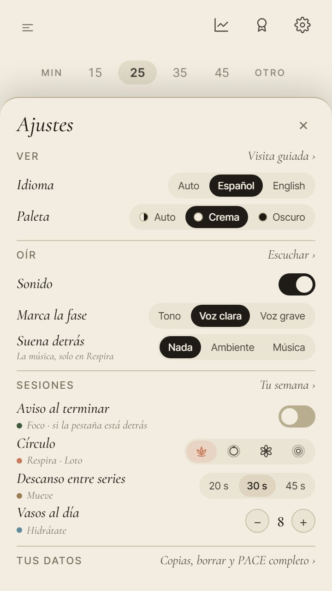<figcaption><b>Hoy</b> · Ajustes a 360 × 640: «Marca la fase» solo manda en Respira</figcaption></figure>
  </div>

  <h2>Así sonaría una rutina</h2>
  <p>Con las recomendadas, la voz dice lo que ya dice la pantalla, en el momento en que hoy suena un cuenco o una madera. Debajo de cada foto, lo que se oiría y lo que suena hoy. Son «Levántate y sube» (Mueve), «Cuello suave» (Estira, por lados) y «Hombros» (Estira, un aguante), a 360 × 640.</p>
  <div class="cuadros">
    <figure class="cuadro">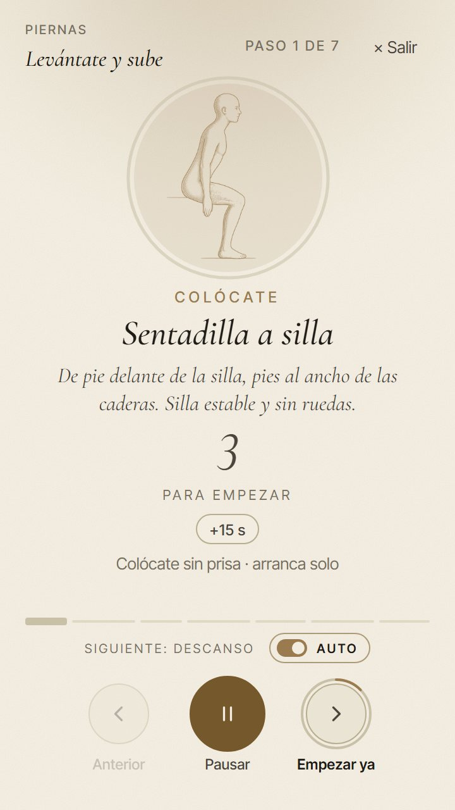
      <span class="oye">«Colócate» … «Tres, dos, uno» … «Ya»</span><span class="hoy">Hoy: cuenco, tres maderas y el cuenco agudo</span></figure>
    <figure class="cuadro">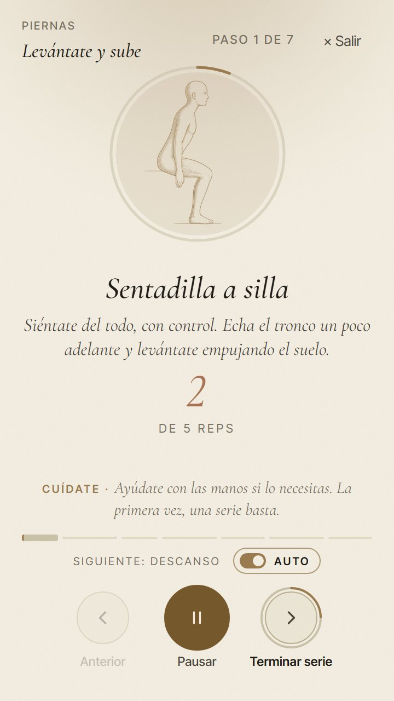
      <span class="oye">«Uno»</span><span class="hoy">Hoy: madera suave</span>
      <span class="que">Acaba la primera. La pantalla ya enseña la 2: la voz cuenta la que acabas, como quien cuenta en voz alta.</span></figure>
    <figure class="cuadro">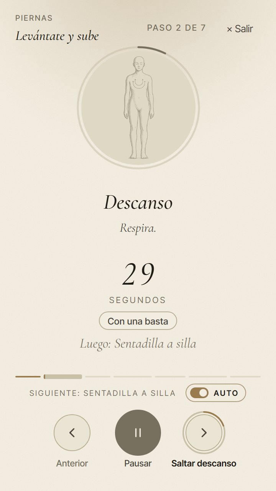
      <span class="oye">«Descansa»</span><span class="hoy">Hoy: cuenco grave</span></figure>
    <figure class="cuadro">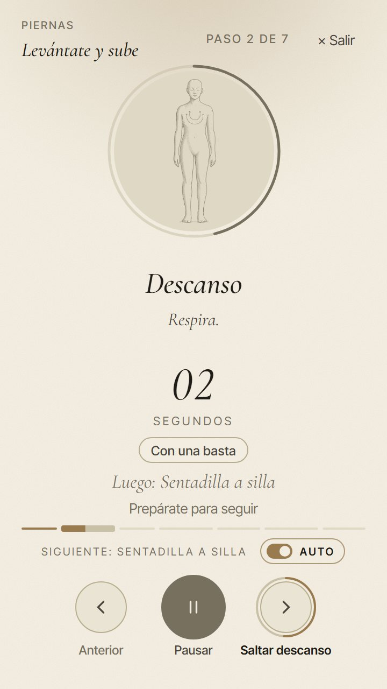
      <span class="oye">«Dos»</span><span class="hoy">Hoy: madera</span>
      <span class="que">Del «tres, dos, uno» del final. Luego, en la otra serie, «Ya».</span></figure>
    <figure class="cuadro">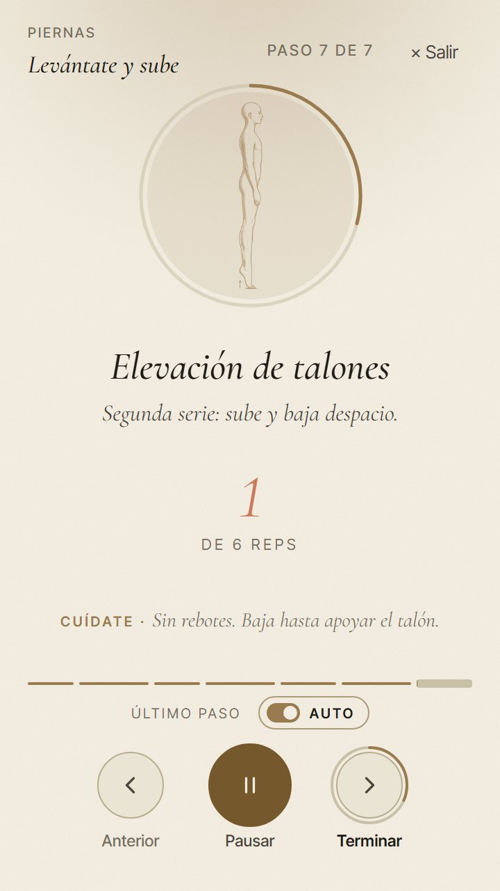
      <span class="oye">«Último paso»</span><span class="hoy">Hoy: cuenco</span>
      <span class="que">Es lo que pone abajo. Al acabar, los tres cuencos de siempre.</span></figure>
    <figure class="cuadro">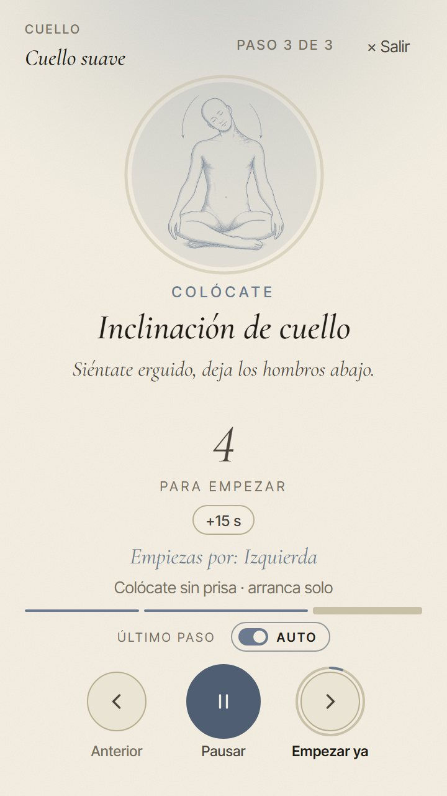
      <span class="oye">«Colócate»</span><span class="hoy">Hoy: cuenco</span></figure>
    <figure class="cuadro">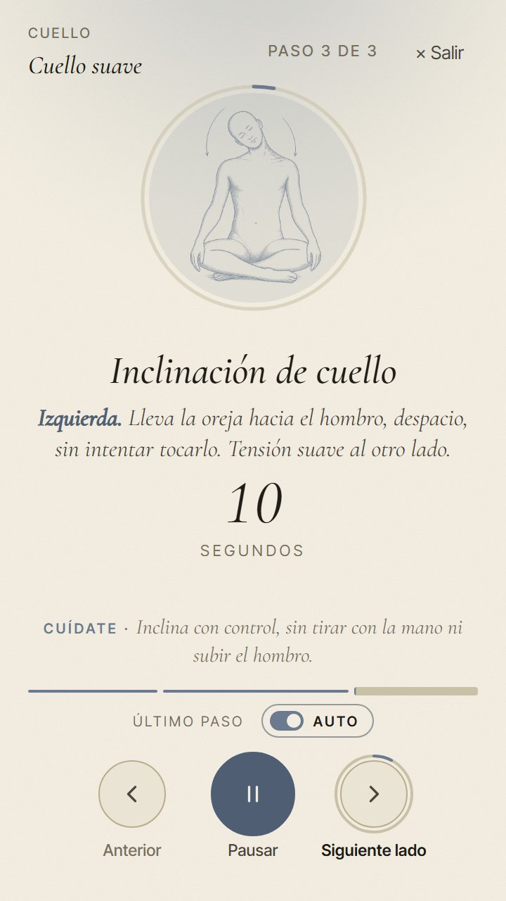
      <span class="oye">«Izquierda»</span><span class="hoy">Hoy: cuenco agudo</span>
      <span class="que">En lugar de «Ya»: la misma palabra que abre el texto.</span></figure>
    <figure class="cuadro">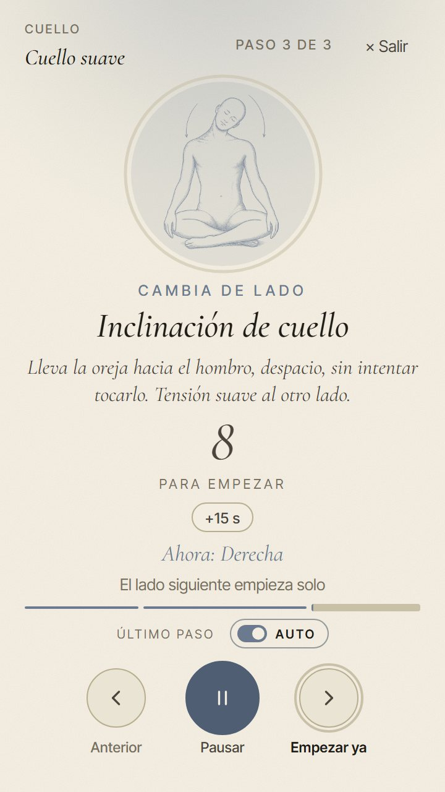
      <span class="oye">«Cambia de lado»</span><span class="hoy">Hoy: dos cuencos</span></figure>
    <figure class="cuadro">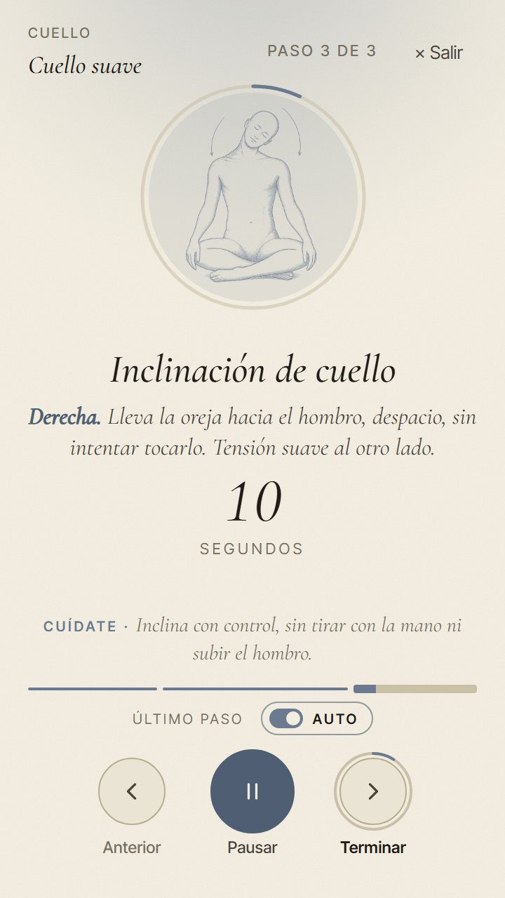
      <span class="oye">«Derecha»</span><span class="hoy">Hoy: cuenco agudo</span></figure>
    <figure class="cuadro">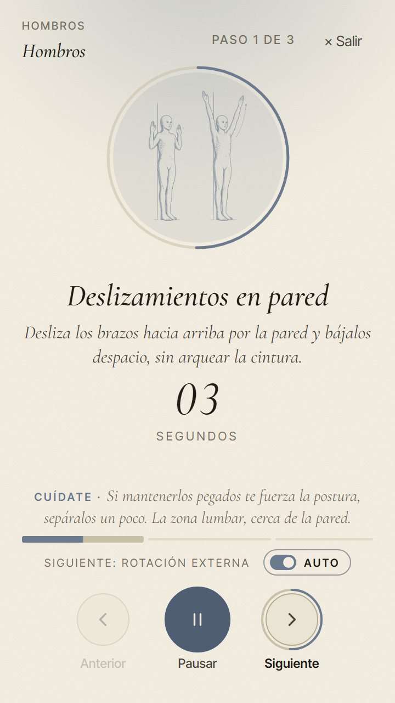
      <span class="oye">«Tres»</span><span class="hoy">Hoy: madera</span>
      <span class="que">Los tres últimos segundos de un paso con reloj.</span></figure>
  </div>
  <p class="nota">Si a una voz le falta un archivo, en ese momento suena el cuenco o la madera de hoy, como ya hace Respira. Por eso se puede montar por tandas.</p>

  <h3 style="margin-top:22px">Lo que no dice</h3>
  <ul>
    <li><strong>Ni las colocaciones, ni las acciones, ni los «Cuídate».</strong> Siguen escritos en la pantalla. Serían más de 300 frases, y cada cambio de texto pediría regrabarlas.</li>
    <li><strong>Ni «baja» o «sube» en las repeticiones.</strong> El dato guarda cuánto dura bajar, aguantar y subir, pero no en qué orden va cada movimiento: en Elevación de talones se sube primero. La voz estaría inventando la técnica.</li>
    <li><strong>Ni ánimos</strong> («¡Muy bien!», «¡Ya casi!»), <strong>ni consejos de salud nuevos</strong>, ni minutos o logros al acabar.</li>
    <li><strong>Ni «Pulsa ›».</strong> Sin «Auto», el cuenco agudo de hoy ya dice que la cuenta llegó a 0.</li>
  </ul>

  <h2>Las siete preguntas</h2>

  <div class="pregunta">
    <h3>1 · Qué dice al empezar cada ejercicio</h3>
    <div class="ops">
      <div class="op es-rec"><span class="letra">A</span><div class="txt">
        <p><strong>«Colócate», «Siguiente» o «Ya», sin el nombre.</strong> <span class="chip">elegida</span></p>
        <p class="rec">La pantalla y el dibujo ya dicen cuál es, y al colocarte vas a mirar igual. Con los nombres serían 292 audios más.</p>
        <p class="cuenta">«Colócate» si hay que colocarse; «Siguiente» si empieza otro ejercicio sin colocarse; «Ya» en la otra serie del mismo, tras el descanso. 132 audios en total.</p></div></div>
      <div class="op"><span class="letra">B</span><div class="txt">
        <p><strong>El nombre del ejercicio</strong> («Sentadilla a silla») en lugar de «Siguiente», y antes de «Colócate».</p>
        <p class="cuenta">73 nombres: los 63 del catálogo y 10 que solo salen en «Tus rutinas». 424 audios, y cada nombre que cambie habría que regrabarlo con las dos voces y en los dos idiomas.</p></div></div>
      <div class="op"><span class="letra">C</span><div class="txt">
        <p><strong>Nada:</strong> al empezar suena el cuenco de siempre, y la voz solo cuenta y avisa.</p>
        <p class="cuenta">124 audios.</p></div></div>
    </div>
  </div>

  <div class="pregunta">
    <h3>2 · Qué cuenta</h3>
    <div class="ops">
      <div class="op es-rec"><span class="letra">A</span><div class="txt">
        <p><strong>Las repeticiones, una a una al acabarlas, y el «tres, dos, uno» del final de cada cuenta</strong>, en lugar de la madera. <span class="chip">elegida</span></p>
        <p class="rec">Es lo que hoy obliga a mirar el número, y los mismos 25 números sirven para las dos cosas.</p>
        <p class="cuenta">La última repetición se dice entera y lo que viene después espera a que acabe la palabra.</p></div></div>
      <div class="op"><span class="letra">B</span><div class="txt">
        <p><strong>Solo las repeticiones.</strong> El «tres, dos, uno» sigue con madera.</p>
        <p class="cuenta">Los mismos 132 audios.</p></div></div>
      <div class="op"><span class="letra">C</span><div class="txt">
        <p><strong>No cuenta:</strong> la madera como hoy, y la voz solo avisa de lo que cambia.</p>
        <p class="cuenta">32 audios.</p></div></div>
    </div>
  </div>

  <div class="pregunta">
    <h3>3 · Los avisos de en medio y el final</h3>
    <div class="ops">
      <div class="op es-rec"><span class="letra">A</span><div class="txt">
        <p><strong>«Izquierda», «Cambia de lado», «Derecha», «Descansa» y «Último paso».</strong> El final, con los tres cuencos de siempre. <span class="chip">elegida</span></p>
        <p class="rec">El lado hoy solo se lee; al acabar, los cuencos ya dicen «terminado» y la pantalla pregunta «¿Te ayudó?», que vas a mirar igual.</p></div></div>
      <div class="op"><span class="letra">B</span><div class="txt">
        <p><strong>Lo mismo, y el final también con voz:</strong> «Movimiento completado» o «Estiramiento completado», como dice la pantalla.</p>
        <p class="cuenta">140 audios.</p></div></div>
      <div class="op"><span class="letra">C</span><div class="txt">
        <p><strong>Solo «Cambia de lado» y «Descansa».</strong> Sin lados ni «Último paso».</p>
        <p class="cuenta">120 audios.</p></div></div>
    </div>
  </div>

  <div class="pregunta">
    <h3>4 · Cómo se enciende la voz</h3>
    <div class="ops">
      <div class="op es-rec"><span class="letra">A</span><div class="txt">
        <p><strong>La misma fila de Ajustes, «Marca la fase», para Respira, Mueve y Estira</strong>, con una línea debajo que lo dice. De fábrica, como la tenga cada uno: hoy, «Voz clara». <span class="chip">elegida</span></p>
        <p class="rec">Es la misma decisión, tono o voz, y no añade ningún botón. Cuando dijiste «es demasiado menús», cinco controles se quedaron en dos.</p>
        <p class="cuenta">Quien tenga la voz en Respira la oirá también en Mueve al actualizar. El interruptor «Sonido» lo sigue callando todo.</p></div></div>
      <div class="op"><span class="letra">B</span><div class="txt">
        <p><strong>Una fila propia, «Voz en Mueve y Estira»</strong>, apagada de fábrica.</p>
        <p class="cuenta">Cabe sin scroll a 360 × 640 (569 px de 584). Son dos decisiones sobre lo mismo.</p></div></div>
      <div class="op"><span class="letra">C</span><div class="txt">
        <p><strong>Un botón «Voz» en el runner</strong>, junto a «Auto».</p>
        <p class="cuenta">Cuando lo que sigue tiene un nombre largo, la fila pasa a dos líneas y mueve el runner entero, que tiene que quedarse quieto. Mira la tercera foto.</p></div></div>
    </div>
    <div class="fotos">
      <figure>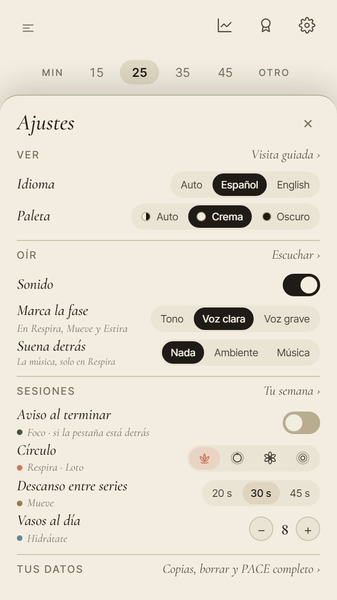<figcaption><b>A</b> · «En Respira, Mueve y Estira» debajo de «Marca la fase»</figcaption></figure>
      <figure>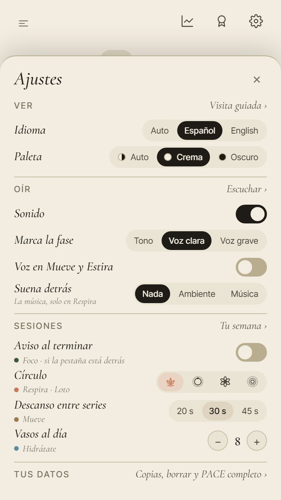<figcaption><b>B</b> · una fila propia, apagada</figcaption></figure>
      <figure>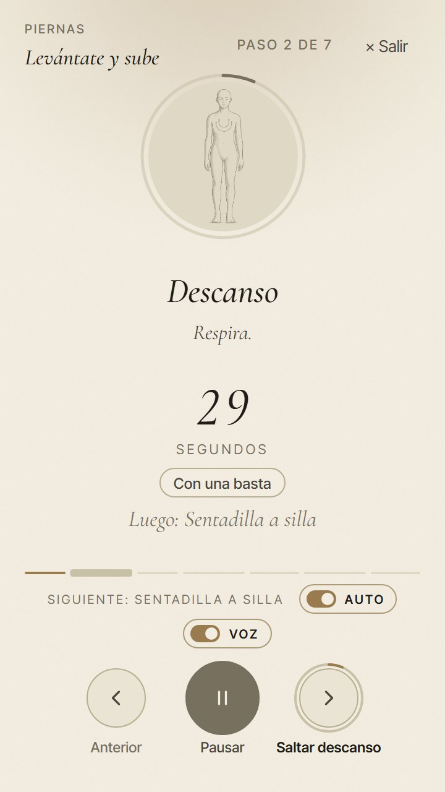<figcaption><b>C</b> · «Voz» junto a «Auto»: con «Siguiente: Sentadilla a silla» baja a otra línea</figcaption></figure>
    </div>
  </div>

  <div class="pregunta">
    <h3>5 · Qué vibra</h3>
    <div class="ops">
      <div class="op es-rec"><span class="letra">A</span><div class="txt">
        <p><strong>Donde hoy suena algo:</strong> un toque corto en cada repetición y en el «tres, dos, uno»; uno medio al empezar; dos al cambiar de lado; uno largo al descansar; tres al acabar. <span class="chip">elegida</span></p>
        <p class="rec">Es lo que pediste, al ritmo de las repeticiones, y sigue el mismo mapa que los sonidos, así que se entiende sin explicarlo.</p></div></div>
      <div class="op"><span class="letra">B</span><div class="txt">
        <p><strong>Solo los cambios:</strong> empezar, cambiar de lado, descansar y acabar. Nada por repetición.</p></div></div>
      <div class="op"><span class="letra">C</span><div class="txt">
        <p><strong>Solo el ritmo:</strong> cada repetición y el «tres, dos, uno», nada más.</p></div></div>
    </div>
    <div class="tabla"><table>
      <thead><tr><th>Momento (A)</th><th>Hoy suena</th><th>Android</th><th>iPhone</th></tr></thead>
      <tbody>
        <tr><td>Cada repetición y cada segundo del «tres, dos, uno»</td><td>madera</td><td class="num">un toque de 30 ms</td><td>toque ligero</td></tr>
        <tr><td>Empieza un ejercicio, «Ya», un lado</td><td>cuenco</td><td class="num">uno de 70 ms</td><td>toque medio</td></tr>
        <tr><td>Cambia de lado</td><td>dos cuencos</td><td class="num">60 · pausa 120 · 60 ms</td><td>dos toques medios</td></tr>
        <tr><td>Descanso</td><td>cuenco grave</td><td class="num">uno de 250 ms</td><td>una vibración de 250 ms</td></tr>
        <tr><td>Fin de la rutina</td><td>tres cuencos</td><td class="num">80 · 120 · 80 · 120 · 80 ms</td><td>el aviso de «hecho» del iPhone</td></tr>
      </tbody>
    </table></div>
    <p class="nota">Las cifras son un punto de partida: se afinan con el móvil en la mano.</p>
  </div>

  <div class="pregunta">
    <h3>6 · Cuándo vibra de fábrica</h3>
    <div class="ops">
      <div class="op es-rec"><span class="letra">A</span><div class="txt">
        <p><strong>Una fila «Vibrar» en Sesiones con tres opciones: «No», «Sin sonido» y «Siempre».</strong> De fábrica, «Sin sonido»: vibra cuando apagas el sonido de PACE. <span class="chip">elegida</span></p>
        <p class="rec">Con sonido, vibrar repite la madera y en la mesa suena a zumbido; sin sonido, es lo único que marca el ritmo.</p>
        <p class="cuenta">Con la línea de la pregunta 4, cabe sin scroll a 360 × 640 (577 px de 584).</p></div></div>
      <div class="op"><span class="letra">B</span><div class="txt">
        <p><strong>Un interruptor «Vibrar», apagado</strong> de fábrica.</p></div></div>
      <div class="op"><span class="letra">C</span><div class="txt">
        <p><strong>Un interruptor «Vibrar», encendido</strong> de fábrica.</p></div></div>
    </div>
    <div class="fotos">
      <figure>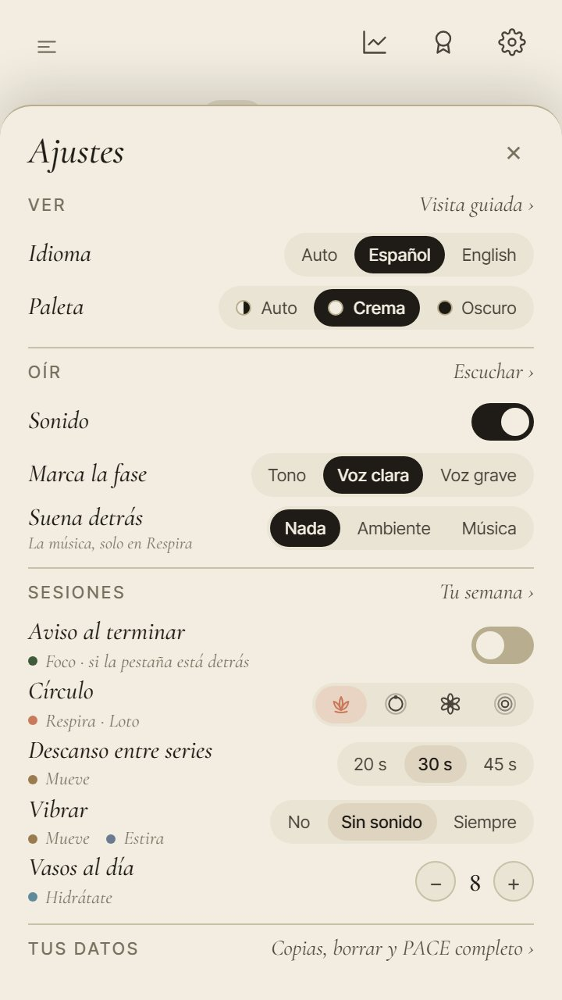<figcaption><b>A</b> · «No · Sin sonido · Siempre», en Sesiones junto a lo de Mueve</figcaption></figure>
      <figure>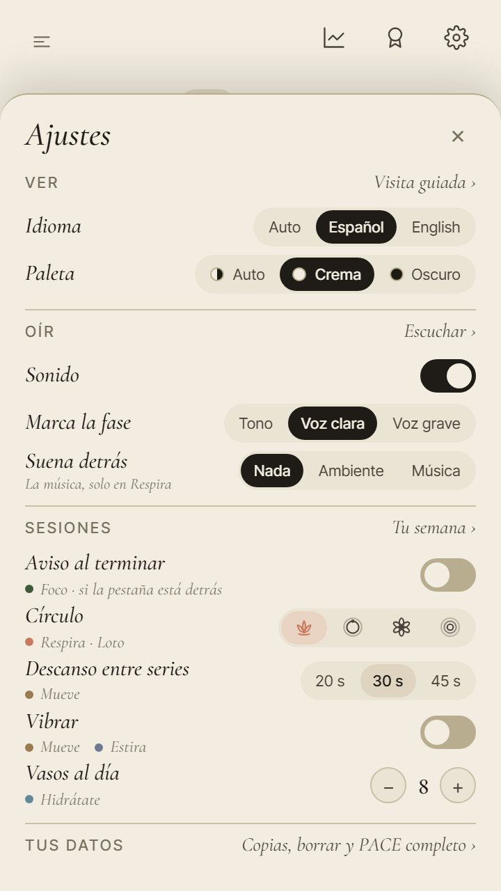<figcaption><b>B</b> · interruptor apagado</figcaption></figure>
      <figure>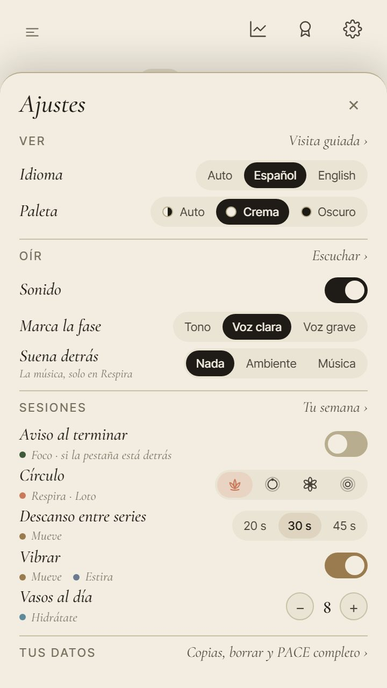<figcaption><b>C</b> · interruptor encendido</figcaption></figure>
    </div>
    <p class="nota">Dos cosas al montarla. En el iPhone por la web la fila no sale, porque allí no se puede vibrar. Y si el navegador tiene los avisos bloqueados, Ajustes enseña una línea más («El navegador tiene las notificaciones bloqueadas…») y el panel correría 12 px: habrá que ganar ese sitio, por ejemplo acortando esa línea.</p>
  </div>

  <div class="pregunta">
    <h3>7 · En qué móviles vibra</h3>
    <div class="ops">
      <div class="op es-rec"><span class="letra">A</span><div class="txt">
        <p><strong>Android e iPhone.</strong> En las dos apps, con el complemento de vibración de Capacitor (Haptics); en Chrome de Android, con la vibración del navegador. En el iPhone por la web, nada. <span class="chip">elegida</span></p>
        <p class="rec">El iPhone está dentro de v1 desde el 22 oct., y sin el complemento no vibraría nunca.</p></div></div>
      <div class="op"><span class="letra">B</span><div class="txt">
        <p><strong>Solo Android:</strong> la app con el permiso de vibrar y Chrome, sin complemento. En el iPhone no vibra y la fila no sale.</p></div></div>
    </div>
    <p>Lo que se puede en cada sitio, comprobado en el código y en la documentación (no en un móvil):</p>
    <div class="tabla"><table>
      <thead><tr><th></th><th>Chrome en Android</th><th>App de Android</th><th>App de iPhone</th><th>iPhone por la web</th></tr></thead>
      <tbody>
        <tr><td><strong>¿Vibra hoy?</strong></td><td>Sí se puede, con <code>navigator.vibrate</code>, después de tocar la pantalla (empezar la rutina ya cuenta)</td><td>No: a la app le falta el permiso de vibrar (<code>android.permission.VIBRATE</code>), y sin él el navegador de dentro no vibra</td><td>No: el navegador del iPhone no tiene vibración</td><td>No, y no hay manera</td></tr>
        <tr><td><strong>¿Qué hace falta?</strong></td><td>Nada más</td><td>El permiso. Lo trae el complemento Haptics, o una línea en el manifiesto</td><td>El complemento Haptics, que usa el motor háptico del iPhone</td><td>—</td></tr>
        <tr><td><strong>¿Versión nueva?</strong></td><td>No</td><td>Sí, un AAB nuevo</td><td>Sí, una de TestFlight nueva</td><td>—</td></tr>
      </tbody>
    </table></div>
    <p class="nota">El complemento oficial (<code>@capacitor/haptics</code> 8) declara él mismo el permiso de vibrar en Android y, en el iPhone, vibra con Core Haptics. MDN avisa de que algunos móviles no vibran en silencio o con «No molestar».</p>
  </div>

  <h2>Con «Auto» y con la música</h2>
  <p><strong>Con «Auto» encendido</strong>, que es como viene, todo lo de arriba.</p>
  <p><strong>Con «Auto» apagado</strong>, las repeticiones van a tu ritmo, así que la voz no las cuenta y el móvil no vibra por repetición (hoy tampoco suena la madera). Las cuentas de colocarse, cambiar de lado, aguantar y descansar dicen «tres, dos, uno» igual; al llegar a 0 suena el cuenco agudo de hoy y la rutina espera a «›»; al tocarlo, la voz dice «Ya», o el lado.</p>
  <p><strong>En pausa</strong>, la voz calla. Al reanudar, el «3, 2, 1» de la vuelta también va con voz.</p>
  <p><strong>Con la música:</strong> PACE no pone música en Mueve y Estira, así que no hay nada que mezclar. Con la tuya (Spotify, la radio), la voz saldría por el mismo camino que los cuencos de hoy y haría lo mismo que ellos. Lo que hacen los cuencos con tu música en el móvil no se puede saber desde aquí: abajo está la prueba de un minuto.</p>

  <h2>Los audios, por tomas</h2>
  <p>Grabas <strong>cuatro tomas por voz y por idioma, 16 en total</strong>, con las mismas voces que Respira. Cada toma es un audio con varias líneas y un silencio entre ellas; el guion las corta, iguala el volumen con Respira y deja cada palabra con su nombre: <strong>36 palabras por voz e idioma, 144 en total</strong>.</p>
  <div class="tabla"><table>
    <thead><tr><th>Toma</th><th>Archivo que entregas</th><th>Lo que dice</th></tr></thead>
    <tbody>
      <tr><td>Números</td><td><code>VOZ-IDIOMA-numeros.mp3</code></td><td>del uno al veinticinco</td></tr>
      <tr><td>Cuenta atrás</td><td><code>VOZ-IDIOMA-cuenta.mp3</code></td><td>tres, dos, uno (cada uno, menos de 0,85 s)</td></tr>
      <tr><td>Avisos</td><td><code>VOZ-IDIOMA-avisos.mp3</code></td><td>Colócate, Siguiente, Ya, Último paso</td></tr>
      <tr><td>Lados y descanso</td><td><code>VOZ-IDIOMA-lados.mp3</code></td><td>Izquierda, Derecha, Cambia de lado, Descansa</td></tr>
    </tbody>
  </table></div>
  <p><code>VOZ</code> es <code>sulafat</code> o <code>bradford</code>; <code>IDIOMA</code>, <code>es</code> o <code>en</code>: <code>sulafat-es-numeros.mp3</code>, <code>bradford-en-lados.mp3</code>… Déjalas en <code>Audio - Cuerpo\</code>, junto a <code>Pace_app</code>, y avisa. <strong>Si una palabra sale rara</strong>, se repite solo esa: <code>sulafat-es-repite-diecisiete.mp3</code>, y el guion la cambia por la de la toma. Por tandas: sulafat en castellano primero, que es la de fábrica.</p>
  <details>
    <summary>Las cuatro tomas de castellano para Genspark</summary>
    <p class="nota">El mismo prompt con sulafat y con bradford. Pega el prompt entero, con las líneas tal cual. Los de inglés están en <a href="PROMPTS_VOZ_CUERPO.md"><code>PROMPTS_VOZ_CUERPO.md</code></a>.</p>
    <div class="prompt"><h4>Números · <code>VOZ-es-numeros.mp3</code> <button class="copiar" type="button">Copiar</button></h4><pre>Say it in Spanish from Spain, in a calm, warm and steady voice, like a movement teacher guiding a quiet session in a small room. Soft but clear, never whispered, never sung, never cheerful or energetic. Read each line as its own separate short sentence, with about one second of silence after each one and no breath in between. Say every number in exactly the same neutral, even tone, as if it were the only word you say: do not read them as a list, do not rise along the way and do not drop on the last one.
Uno.
Dos.
Tres.
Cuatro.
Cinco.
Seis.
Siete.
Ocho.
Nueve.
Diez.
Once.
Doce.
Trece.
Catorce.
Quince.
Dieciséis.
Diecisiete.
Dieciocho.
Diecinueve.
Veinte.
Veintiuno.
Veintidós.
Veintitrés.
Veinticuatro.
Veinticinco.</pre></div>
    <div class="prompt"><h4>Cuenta atrás · <code>VOZ-es-cuenta.mp3</code> <button class="copiar" type="button">Copiar</button></h4><pre>Say it in Spanish from Spain, in a calm, warm and steady voice, like a movement teacher guiding a quiet session in a small room. Soft but clear, never whispered, never sung, never cheerful or energetic. A slow countdown: read each line as its own separate word, with about one second of silence after each one and no breath in between. Each number very short, well under one second, all three in the same calm tone, the last one not louder and not falling.
Tres.
Dos.
Uno.</pre></div>
    <div class="prompt"><h4>Avisos · <code>VOZ-es-avisos.mp3</code> <button class="copiar" type="button">Copiar</button></h4><pre>Say it in Spanish from Spain, in a calm, warm and steady voice, like a movement teacher guiding a quiet session in a small room. Soft but clear, never whispered, never sung, never cheerful or energetic. Read each line as its own separate short instruction, with about one second of silence after each one and no breath in between, all in the same calm, neutral tone, not as a list. Keep each line short: "Ya" well under one second, the others under one and a half seconds.
Colócate.
Siguiente.
Ya.
Último paso.</pre></div>
    <div class="prompt"><h4>Lados y descanso · <code>VOZ-es-lados.mp3</code> <button class="copiar" type="button">Copiar</button></h4><pre>Say it in Spanish from Spain, in a calm, warm and steady voice, like a movement teacher guiding a quiet session in a small room. Soft but clear, never whispered, never sung, never cheerful or energetic. Read each line as its own separate short instruction, with about one second of silence after each one and no breath in between, all in the same calm, neutral tone, not as a list. Keep each line under one and a half seconds, and "Cambia de lado" under two seconds, its three words together without pauses. "Descansa" a little softer, like letting the body settle.
Izquierda.
Derecha.
Cambia de lado.
Descansa.</pre></div>
    <div class="prompt"><h4>Una palabra repetida · <code>VOZ-es-repite-NOMBRE.mp3</code> <button class="copiar" type="button">Copiar</button></h4><pre>Say it in Spanish from Spain, in a calm, warm and steady voice, like a movement teacher guiding a quiet session in a small room. Soft but clear, never whispered, never sung, never cheerful or energetic. One single word, no breath before it, no pause before it, in a neutral, even tone, well under one second: Diecisiete.</pre></div>
  </details>

  <h2>Lo que no se puede saber sin un móvil</h2>
  <p><strong>Una prueba de un minuto que puedes hacer ya</strong>, con la app de hoy: pon música en el móvil (Spotify o lo que uses) y haz «Levántate y sube» con el sonido de PACE puesto. ¿La música sigue, baja o se corta con los cuencos? En Android y, si puedes, en el iPhone, y en el iPhone también con el botón de silencio puesto: ¿suenan los cuencos? La voz hará lo mismo que ellos.</p>
  <ul>
    <li>Si los toques de 30 ms se notan en tu móvil, en la mano, en el bolsillo y encima de la mesa, o hay que alargarlos.</li>
    <li>Si Android vibra en silencio o con «No molestar», y si el ajuste de vibración al tocar la apaga.</li>
    <li>Si en el iPhone, con la vibración del sistema apagada, los toques se callan.</li>
    <li>Si la voz se entiende con el móvil en el suelo, a uno o dos metros, con el volumen normal.</li>
    <li>Cuánto tarda la primera palabra en un móvil lento. Se precargaría en la cuenta de entrada, como en Respira.</li>
  </ul>

  <h2>Cuánto trabajo era montarlo</h2>
  <div class="tabla"><table>
    <thead><tr><th>Pieza</th><th>Trabajo</th></tr></thead>
    <tbody>
      <tr><td>La voz en el runner: cada momento con su palabra, el número de cada repetición, «Último paso», y que la última repetición no pise lo que viene</td><td>una sesión. El runner roza las 500 líneas, así que va en un archivo aparte, y las tablas de los audios aparte de las de Respira</td></tr>
      <tr><td>Medir e igualar cada tanda de audios</td><td>media sesión por tanda, con el guion de Respira adaptado</td></tr>
      <tr><td>Ajustes: la línea de «Marca la fase» y la fila «Vibrar», medidas a 360 × 640</td><td>media sesión</td></tr>
      <tr><td>La vibración y el complemento Haptics en las dos apps</td><td>media sesión, más un AAB y una de TestFlight nuevos, que hace GitHub</td></tr>
      <tr><td>Pruebas: cada palabra en su momento con el reloj acelerado, sin «Auto» no cuenta, la vibración se pide, en el iPhone por la web la fila no sale</td><td>media sesión</td></tr>
      <tr><td>Probarlo tú en los dos móviles</td><td>15 minutos</td></tr>
    </tbody>
  </table></div>
  <p>Unas tres sesiones en total, más tus tandas de audio. La vibración no depende de los audios: se puede montar antes.</p>

  <h2>Las preguntas, de un vistazo</h2>
  <div class="tabla"><table>
    <thead><tr><th></th><th>Pregunta</th><th>Elegida</th></tr></thead>
    <tbody>
      <tr><td class="num">1</td><td>Qué dice al empezar cada ejercicio</td><td><strong>A</strong> · «Colócate», «Siguiente» o «Ya», sin el nombre</td></tr>
      <tr><td class="num">2</td><td>Qué cuenta</td><td><strong>A</strong> · las repeticiones y el «tres, dos, uno»</td></tr>
      <tr><td class="num">3</td><td>Los avisos de en medio y el final</td><td><strong>A</strong> · los lados, «Descansa» y «Último paso»; el final con los cuencos</td></tr>
      <tr><td class="num">4</td><td>Cómo se enciende la voz</td><td><strong>A</strong> · la misma «Marca la fase», con una línea debajo</td></tr>
      <tr><td class="num">5</td><td>Qué vibra</td><td><strong>A</strong> · donde hoy suena algo, también cada repetición</td></tr>
      <tr><td class="num">6</td><td>Cuándo vibra de fábrica</td><td><strong>A</strong> · «No · Sin sonido · Siempre», de fábrica «Sin sonido»</td></tr>
      <tr><td class="num">7</td><td>En qué móviles vibra</td><td><strong>A</strong> · Android e iPhone, con el complemento</td></tr>
    </tbody>
  </table></div>
  <div class="resumen">
    <p><strong>Elegidas todas en A</strong> (15 nov.). Lo que queda: las ocho tomas de inglés, oírlo y sentirlo en el móvil, y juntar la rama.</p>
  </div>
  <div class="fotos">
    <figure>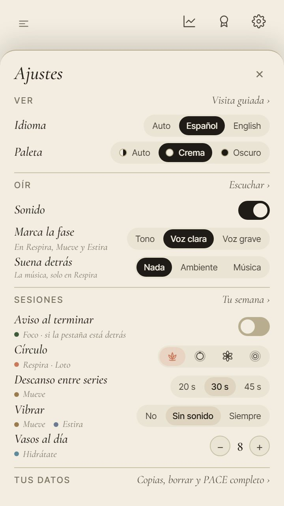<figcaption><b>4A y 6A juntas</b> · lo único que cambia a la vista, sin scroll a 360 × 640</figcaption></figure>
  </div>
</main>

<script src="datos.js"></script>
<script>
/* «Para oír»: cada palabra suena como en la app (Sound.voz.cuerpo.js): el trozo a..b de su toma, con su
   volumen y un fundido de 5 ms a cada lado. La tabla es la misma que lee la app (datos.js, que es
   app/ui/Sound.voz.cuerpo.datos.js) y las tomas, las mismas (voz/, que es app/move/voz/). Una voz carga
   sus cuatro tomas al tocarla por primera vez. Lo que suena se para al tocar otra cosa. */
(function () {
  var raiz = document.querySelector('[data-oir]');
  if (!raiz) return;
  var D = (window.PACE_VOZ_CUERPO || {}).es || {};
  var NUM = ['uno', 'dos', 'tres', 'cuatro', 'cinco', 'seis', 'siete', 'ocho', 'nueve', 'diez', 'once', 'doce', 'trece', 'catorce',
    'quince', 'dieciséis', 'diecisiete', 'dieciocho', 'diecinueve', 'veinte', 'veintiuno', 'veintidós', 'veintitrés', 'veinticuatro', 'veinticinco'];
  var VOCES = [['sulafat', 'Voz clara', 'sulafat'], ['bradford', 'Voz grave', 'bradford, toma 2']];
  var GRUPOS = [
    ['Números', NUM.map(function (n, i) { return ['n' + (i + 1), n]; })],
    ['Cuenta atrás', [['c3', 'tres'], ['c2', 'dos'], ['c1', 'uno']]],
    ['Avisos', [['colocate', 'Colócate'], ['siguiente', 'Siguiente'], ['ya', 'Ya'], ['ultimo', 'Último paso']]],
    ['Lados y descanso', [['izquierda', 'Izquierda'], ['derecha', 'Derecha'], ['cambia', 'Cambia de lado'], ['descansa', 'Descansa']]]
  ];
  /* El principio de «Levántate y sube» en el runner: la cuenta de entrada, «Colócate» y su cuenta, «Ya», tres
     repeticiones y «Descansa». Segundos aproximados. */
  var SERIE = [['c3', 0], ['c2', 1], ['c1', 2], ['colocate', 3], ['c3', 6], ['c2', 7], ['c1', 8], ['ya', 9],
    ['n1', 11.5], ['n2', 14], ['n3', 16.5], ['descansa', 19]];

  var ctx = null, tomas = {}, botones = {}, vivos = [], relojes = [];
  try { if (navigator.audioSession) navigator.audioSession.type = 'playback'; } catch (e) {}

  /* El contexto nace y arranca dentro del toque: Safari no deja sonar sin él. */
  function contexto() {
    if (!ctx) {
      var C = window.AudioContext || window.webkitAudioContext;
      if (!C) return null;
      ctx = new C();
      try { var b = ctx.createBuffer(1, 1, 22050); var s = ctx.createBufferSource(); s.buffer = b; s.connect(ctx.destination); s.start(0); } catch (e) {}
    }
    if (ctx.state === 'suspended') { try { ctx.resume(); } catch (e) {} }
    return ctx;
  }
  function toma(archivo) {
    if (!tomas[archivo]) {
      tomas[archivo] = fetch('voz/' + archivo).then(function (r) {
        if (!r.ok) throw new Error(r.status);
        return r.arrayBuffer();
      }).then(function (datos) {
        return new Promise(function (ok, ko) { ctx.decodeAudioData(datos, ok, ko); });
      });
      tomas[archivo].catch(function () { delete tomas[archivo]; });
    }
    return tomas[archivo];
  }
  function cargar(voz) {
    var archivos = {};
    Object.keys(D[voz]).forEach(function (k) { archivos[D[voz][k].archivo] = true; });
    var lista = Object.keys(archivos);
    return Promise.all(lista.map(toma)).then(function (bufs) {
      var porArchivo = {};
      lista.forEach(function (a, i) { porArchivo[a] = bufs[i]; });
      return porArchivo;
    });
  }
  function para() {
    vivos.forEach(function (s) { try { s.stop(); } catch (e) {} });
    vivos = [];
    relojes.forEach(clearTimeout);
    relojes = [];
    raiz.querySelectorAll('.suena').forEach(function (b) { b.classList.remove('suena'); });
  }
  function marca(voz, clave, on) {
    (botones[voz + '.' + clave] || []).forEach(function (b) { b.classList.toggle('suena', on); });
  }
  /* Programa una palabra en t0 (reloj del contexto). Devuelve cuándo acaba. */
  function programa(voz, clave, t0, bufs) {
    var e = D[voz][clave];
    var buf = bufs[e.archivo];
    var dur = Math.min(e.b, buf.duration) - e.a;
    var vol = typeof e.vol === 'number' ? e.vol : 1, f = 0.005;
    var s = ctx.createBufferSource(), g = ctx.createGain();
    s.buffer = buf;
    g.gain.setValueAtTime(0, t0);
    g.gain.linearRampToValueAtTime(vol, t0 + f);
    g.gain.setValueAtTime(vol, t0 + dur - f);
    g.gain.linearRampToValueAtTime(0, t0 + dur);
    s.connect(g); g.connect(ctx.destination);
    s.start(t0, e.a); s.stop(t0 + dur + 0.01);
    vivos.push(s);
    var desde = Math.max(0, (t0 - ctx.currentTime) * 1000);
    relojes.push(setTimeout(function () { marca(voz, clave, true); }, desde));
    relojes.push(setTimeout(function () { marca(voz, clave, false); }, desde + dur * 1000));
    return t0 + dur;
  }
  /* plan(bufs, ahora) programa lo que toque. */
  function tocar(voz, estado, plan) {
    para();
    if (!contexto()) { estado.textContent = 'Este navegador no puede sonar audio.'; return; }
    var espera = setTimeout(function () { estado.textContent = 'Cargando las tomas…'; }, 150);
    cargar(voz).then(function (bufs) {
      clearTimeout(espera); estado.textContent = '';
      plan(bufs, ctx.currentTime + 0.05);
    }, function () {
      clearTimeout(espera); estado.textContent = 'No se han podido cargar las tomas. Prueba otra vez.';
    });
  }
  function boton(clase, texto, alPulsar) {
    var b = document.createElement('button');
    b.type = 'button'; b.className = clase; b.textContent = texto;
    b.addEventListener('click', alPulsar);
    return b;
  }

  VOCES.forEach(function (v) {
    var voz = v[0];
    if (!D[voz]) return;
    var caja = document.createElement('section');
    caja.className = 'oir-voz';
    var cab = document.createElement('div'); cab.className = 'oir-vcab';
    var h = document.createElement('h3'); h.textContent = v[1] + ' ';
    var sm = document.createElement('small'); sm.textContent = v[2]; h.appendChild(sm);
    var estado = document.createElement('p'); estado.className = 'oir-estado'; estado.setAttribute('aria-live', 'polite');
    cab.appendChild(h);
    cab.appendChild(boton('oir-btn', 'Una serie', function () {
      tocar(voz, estado, function (bufs, t) { SERIE.forEach(function (p) { if (D[voz][p[0]]) programa(voz, p[0], t + p[1], bufs); }); });
    }));
    caja.appendChild(cab);
    caja.appendChild(estado);
    GRUPOS.forEach(function (gr) {
      var palabras = gr[1].filter(function (p) { return D[voz][p[0]]; });
      if (!palabras.length) return;
      var g = document.createElement('div'); g.className = 'oir-grupo';
      var gc = document.createElement('div'); gc.className = 'oir-cab';
      var t = document.createElement('span'); t.textContent = gr[0];
      gc.appendChild(t);
      gc.appendChild(boton('oir-btn', 'Oír seguidas', function () {
        tocar(voz, estado, function (bufs, t0) {
          palabras.forEach(function (p) { t0 = programa(voz, p[0], t0, bufs) + 0.6; });
        });
      }));
      g.appendChild(gc);
      var fila = document.createElement('div'); fila.className = 'oir-botones';
      palabras.forEach(function (p) {
        var b = boton('palabra', p[1], function () {
          tocar(voz, estado, function (bufs, t0) { programa(voz, p[0], t0, bufs); });
        });
        (botones[voz + '.' + p[0]] = botones[voz + '.' + p[0]] || []).push(b);
        fila.appendChild(b);
      });
      g.appendChild(fila);
      caja.appendChild(g);
    });
    raiz.appendChild(caja);
  });
  if (!raiz.children.length) raiz.innerHTML = '<p class="nota">No hay tomas cortadas todavía.</p>';
})();
</script>
<script src="tomas-en/datos.js"></script>
<script src="oir-en.js"></script>

<script>
/* Copiar un prompt: el portapapeles solo se escribe dentro del clic, y si la vista no lo deja se
   selecciona el texto para copiarlo a mano. */
document.querySelectorAll('.copiar').forEach(function (b) {
  b.addEventListener('click', function () {
    var pre = b.closest('.prompt').querySelector('pre');
    var texto = pre.textContent;
    var hecho = function () { b.textContent = 'Copiado'; setTimeout(function () { b.textContent = 'Copiar'; }, 1600); };
    var aMano = function () {
      try { var r = document.createRange(); r.selectNodeContents(pre); var s = window.getSelection(); s.removeAllRanges(); s.addRange(r); b.textContent = 'Seleccionado'; } catch (e) {}
    };
    try {
      if (navigator.clipboard && navigator.clipboard.writeText) navigator.clipboard.writeText(texto).then(hecho, aMano);
      else aMano();
    } catch (e) { aMano(); }
  });
});
</script>
